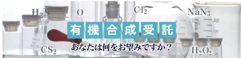
当社の有機合成部門は
- アジ化ナトリウム、二硫化炭素をベースとした合成反応を得意としており、各種アジ化物、ヘテロ環化合物等、含窒素、含硫黄化合物の合成に対応します。
- 塩素、過酸化水素の専用設備を持ち、塩素化、スルホン化、エポキシ化等の各種合成に対応しています。
- 数10基のGL反応器をはじめ、多数の装置を備えたマルチプラントを活用して、多様なニーズに対応できます。
- 医薬、電子材料の中間体、酸クロライド、テトラゾール類、ジアゾール類、アゾール類、有機硫黄化合物の受託合成実績があります。
当社の分析開発部門は
- LCMS、GCMS、FT-NMR、ICP等の各種分析機器を駆使し、高度な分析・解析を行います。
- 新しい分析技術の確立を通じて、研究開発をサポートしています。
市場調査、製品開発にも注力し、合成研究から一貫したプロジェクトによる共同研究も行います。
製造設備
グラムスケールからトンスケールまでの様々な反応に対応します。
弊社は、50L～10,000Lと幅広い容量の反応釜を所有しており、多くの反応釜にフルゾーン®撹拌翼*を採用していることから、効率的にスケールアップを行うことができます。
弊社は、50L～10,000Lと幅広い容量の反応釜を所有しており、多くの反応釜にフルゾーン®撹拌翼*を採用していることから、効率的にスケールアップを行うことができます。
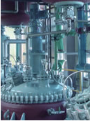
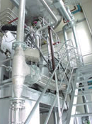
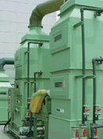
-
OSP [マルチプラント]
開発初期段階のスケールアップに対応します。100Lおよび500L釜は一圧対応です。LAHを用いた還元反応も経験があります。
反応槽 受器 付帯設備 0L GL*1基 50L GL*1基 加圧濾過器x2基 100L GL*x1基 100L GLx1基 遠心分離機 300L GL*x1基 300L GLx1基 棚段式減圧乾燥機（クリーンルーム内） 500L GL*x2基 500L GLx1基 50L エバポレーター 500L GLx1基（活生炭処理専用） -
OS-2 [マルチプラント]
数十キロ～数百キロの製造に適したプラントです。また、有臭反応に対応し、除外設備が充実しています。
DMSO酸化やZn還元反応も対応可能です。反応槽 受器 付帯設備 6.0m³GL*x1基 2.0m³GLx1基 遠心分離機×2基 3.0m³GL*x1基 0.5m³GLx1基 減圧濾過器×3基 2.0m³GL*x4基 棚段式乾燥機×1基 1.0m³GL*x2基 棚段式減圧乾燥機×3基 0.5m³GL*x2基 コニカル乾燥機×1基 0.3m³GL*x1基 -
OS-3 [GMP対応マルチプラント]
トンスケールの製造を目的としたプラントです。晶析～分離～乾燥～充填（クリーンルーム）まで一貫ラインとし、GMPにも対応可能です。
反応槽 受器 付帯設備 10.0m³GLx2基* 3.0m³GLx1基 遠心分離機 6.0m³GLx2基* 5.0m³SUSx2基 加圧濾過器 調整槽 5.0m³GLx3基 3.0m³SUSx1基 ナウター乾燥機 3.0m³SUSLx1基 2.5m³SUSx1基 振動乾燥機 1.0m³SUSLx1基 -
FR [化成品向けマルチプラント]
反応槽 受器 付帯設備 2.0m³GLx1基* 6.0m³GLx2基 遠心分離機 3.0m³GLx1基* 2.0㎥GLx1基 加圧濾過器 4.0m³GLx2基 1.0m³GLx1基 一圧2.0㎥GL×1基* 0.5㎥GLx1基 晶析槽 10.0m³SUSx1基 溶解槽 10.0m³SUSx1基
＊印はすべてフルゾーン®撹拌翼です
＊フルゾーン®は(株)神鋼環境ソリューションの登録商標・登録特許です。 http://www.kobelco-eco.co.jp/
＊フルゾーン®は(株)神鋼環境ソリューションの登録商標・登録特許です。 http://www.kobelco-eco.co.jp/
分析機器等（LCMS、GCMS、FT-NMR、ICP等）
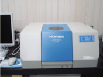
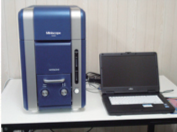
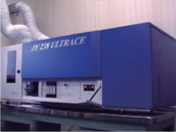
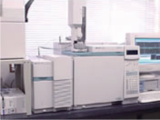
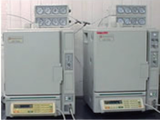
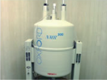
| 構造解析・定性定量 | 物性値測定 |
|---|---|
| GC | 自動融点測定装置 |
| HPLC | 色差計 |
| GCMS | 示差走査熱量計（DSC） |
| LCMS | 示差熱・熱重量計（TG/DTA） |
| GPC | 電子顕微鏡 |
| イオンクロマトグラフィー | マイクロスコープ |
| FT-IR | 回転粘度計 |
| 紫外可視分光光度計 | 屈折率計 |
| FT-NMR | 粒度分布測定装置（レーザー回折、散乱式） |
| ICP | 粉体特性測定装置 |
| 原子吸光光度計（フレーム、フレームレス） | |
| 全有機炭素計 | |
| 施光計 | |
| 蛍光Ｘ線装置 | |
| K.F.自動水分測定装置（電量、容量） | |
| 電位差滴定装置 |
有機合成品例
-
1）アジド化合物例
構造式 化合物情報 工業化レベル 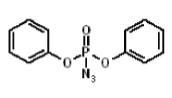 名称 ジフェニルホスホリルアジド
略称 DPPA
M.W 275.19
CAS.No 26386-88-9
使用用途 使用用途
C 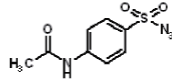 名称 4-アセトアミドベンゼンスルフォニルアジド
略称 ABSA
M.W 204.24
CAS.No 2158-14-7
使用用途 医薬中間体、電子材料など
P 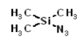 名称 トリメチルシリルアジド
略称 TMSA
M.W 115.21
L -
2）有臭化合物例
構造式 化合物情報 工業化レベル 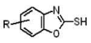 名称 2-メルカプトベンズオキサゾール類
略称 医薬中間体、農薬中間体など
P 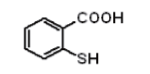 名称 チオサリチル
M.W 154.19
CAS.No 147-93-3
使用用途 医薬中間体、農薬中間体など
P 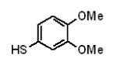 名称 ジメトキシチオフェノール
略称 170.23
M.W 115.21
CAS.No 19689-66-8
使用用途 電子材料など
P 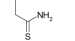 名称 チオプロピオンアミド
略称 TPA
M.W 89.16
P 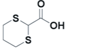 名称 1,3-Dithiane 2-Carboxylic Acid
略称 DTA
M.W 164.25
CAS.No 20461-89-6
P 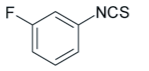 名称 m-フルオロイソチオシアネート
略称 MFIT
M.W 153
P